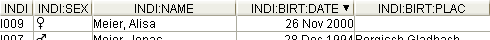
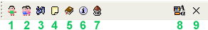

Cette vue présente toutes les entités (du même type)
sous forme de tableaux (exemple, tous les individus, toutes les familles,
etc..), répartis en colonnes.
Vous pouvez vous déplacer de haut en bas et
vice versa, en utilisant les ascenseurs sur le côté et
ainsi sélectionner des entités. Votre sélection
sera notifiée à la Fenêtre
d'Edition qui, alors, présentera les propriétés
de l'entité choisie.
En cliquant sur l'une des entêtes
de colonnes, la liste complète sera triée suivant le
critère de la colonne - en cliquant une nouvelle fois, l'ordre de
tri sera inversé. Un petit marqueur vous indiquera quelle
colonne est triée, et la direction de l'ordre de tri.

Comment chaque cellule du tableau est elle faite ? Le tableau
montre une entité à la fois, exemple, l'entité
Individu, l'entité Famille ... Les cellules dans chaque colonne
donnent les valeurs des propriétés d'une entité
identifiées par les Chemins
d'Etiquettes.
Chaque colonne représente les chemins complets vers une
propriété spécifique de l'arbre
généalogique pour cette entité. Les entêtes
de colonnes visualisent ce chemin - par exemple
INDI:BIRT:DATE indique la date de naissance d'un individu
(INDI(individu)-->BIRT(naissance)-->DATE(date) - le chemin est donc
"individu", "naissance" et "date").
